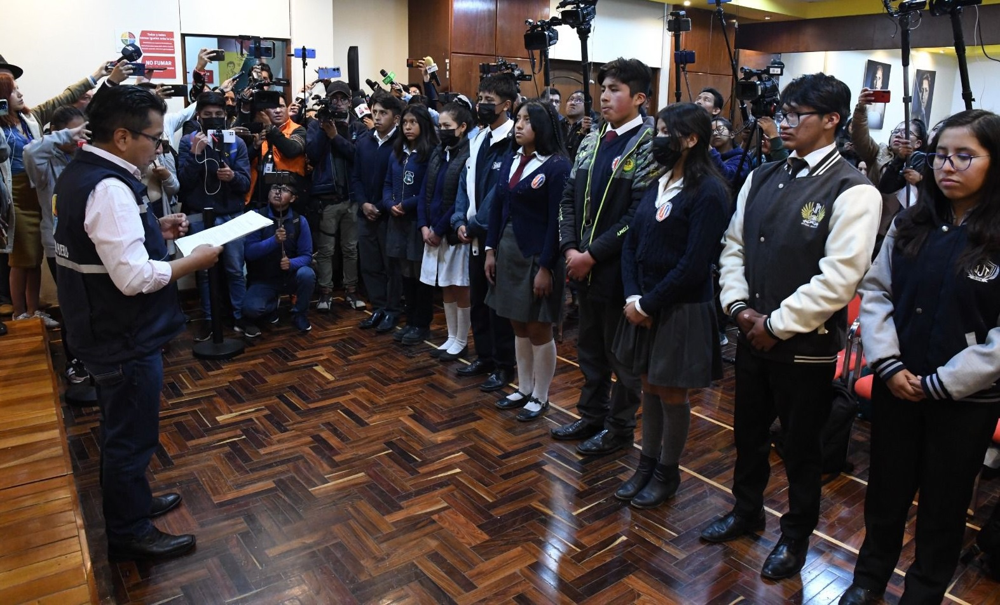
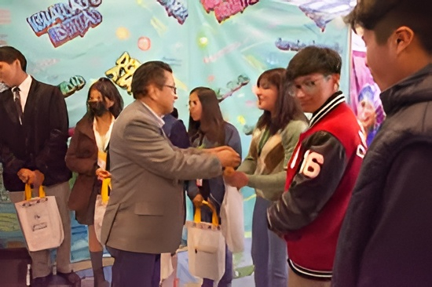
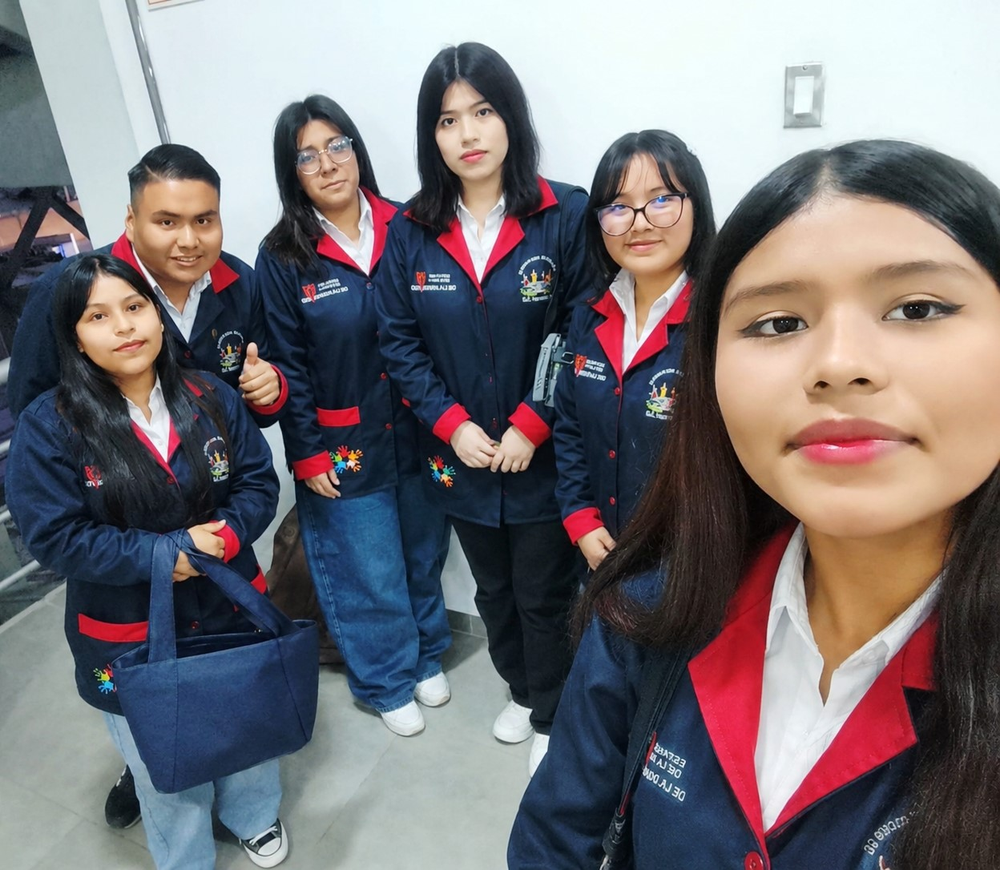
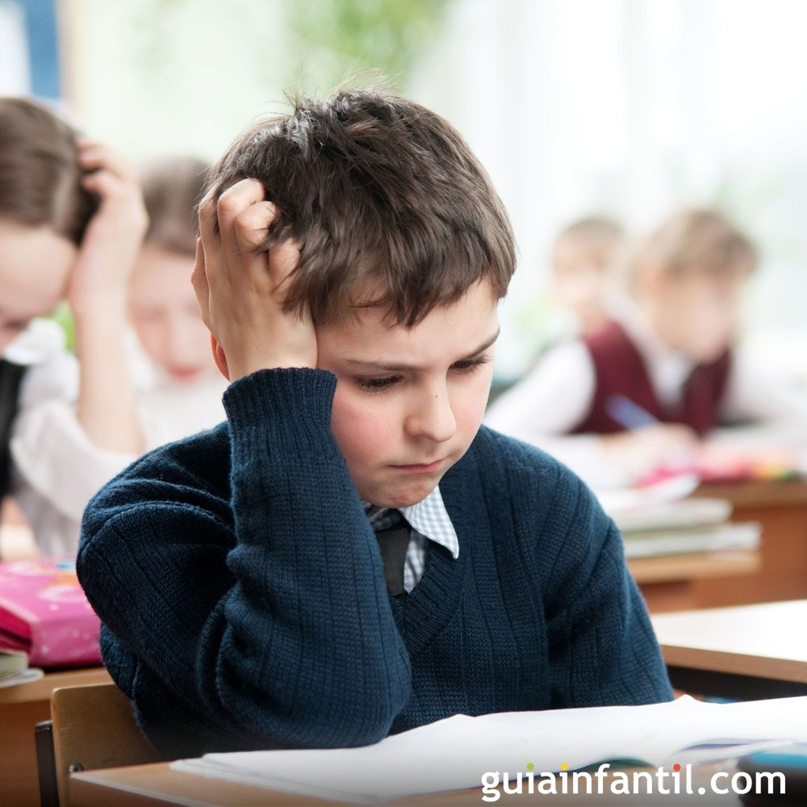
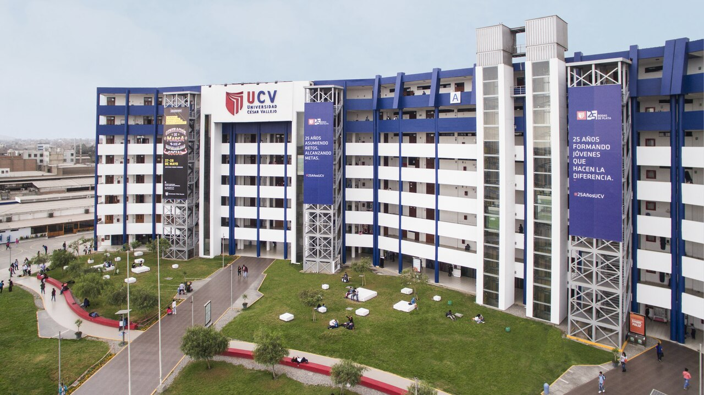

DEFINICIÓN DE LA BAJA AUTOESTIMA


Conoce cómo la baja autoestima afecta el desarrollo académico, emocional y social de los estudiantes.
Explorar problemática


Somos un equipo de investigadores y estudiantes de educación primaria de la Universidad César Vallejo: Pedro Anglas, Bianca Barja, Jhanira Pomacaja, Sofía Esteban, Gisely Reyna y María Mendoza, dedicados al análisis y la mejora de los procesos formativos. En esta oportunidad, nuestro trabajo se enfoca en abordar la falta de autoestima en la educación, un factor crítico que impacta directamente en el desarrollo integral, el bienestar socioemocional y el rendimiento académico de los estudiantes.
La baja autoestima es un desafío educativo crítico que frena el bienestar emocional y el éxito escolar de los estudiantes. A nivel global, la ansiedad y la inseguridad generan bloqueos que limitan el aprendizaje, una realidad que en el Perú se refleja de forma alarmante con el 71.3% de alumnos afectados en Ayacucho y un impacto directo en el desarrollo cognitivo y socioafectivo en distritos de Lima como San Martín de Porres y Comas. Frente a este panorama, es urgente la acción conjunta de psicólogos, docentes y familias para brindar soporte psicopedagógico y transformar las aulas en espacios seguros.


La salud mental, la autoestima y la imagen corporal determinan el bienestar emocional y el éxito académico de los jóvenes. Casos globales en Corea del Sur, México y Bolivia demuestran que la insatisfacción personal, la ansiedad y la depresión postpandemia generan bloqueos emocionales que afectan directamente el rendimiento escolar. Frente a problemas como el miedo al error, el estigma social y la falta de orientación oportuna, resulta urgente que las instituciones educativas transformen sus aulas en espacios de confianza. Implementar protocolos de atención temprana y replantear el error como parte del aprendizaje son pasos clave para garantizar el desarrollo integral, saludable y equilibrado de las futuras generaciones.

A nivel nacional, la baja autoestima representa uno de los desafíos más críticos en el ámbito escolar, tal como lo demuestra un estudio descriptivo y cuantitativo de la Universidad Católica Los Ángeles de Chimbote (2025). Esta investigación reveló una preocupante realidad en instituciones públicas de Ayacucho, donde el 71.3% de los estudiantes presenta niveles de baja autoestima. Estos resultados no solo visibilizan el estado vulnerable en el que se encuentran los alumnos, sino que colman de urgencia la recomendación de implementar apoyo psicopedagógico y la intervención de especialistas para brindarles el soporte necesario y disminuir eficazmente este índice.

La baja autoestima en los estudiantes de San Martín de Porres y Comas (Lima) durante los años 2021 y 2022 ha impactado negativamente en su bienestar emocional y rendimiento académico, evidenciándose una relación directa entre el autoconcepto y los logros escolares (con niveles de influencia en el aprendizaje de hasta el 75% según estudios). Frente a esto, resulta fundamental la intervención conjunta de psicólogos, docentes y padres de familia para fortalecer la confianza y motivación de los menores mediante el apoyo y el reconocimiento. Fomentar una autoestima saludable no solo optimiza su desempeño educativo actual y previene dificultades futuras, sino que también asegura un desarrollo integral que les permitirá, en la edad adulta, aportar de manera positiva a la transformación de su entorno social.
La orientación educativa favorece al desarrollo de la autoestima en los estudiantes. Además, las estrategias psicopedagógicas ayudan a mejorar la autoestima escolar. Por último, las actividades físicas, formación de las creencias de buenas habilidades emocionales, esclarecimiento vocacional y finalmente la promoción de la salud fortalecen la autoestima. Paredes Vásquez. H. B. (2021).
El miedo, la ansiedad, los fracasos escolares y las experiencias negativas afectan la confianza y rendimiento del estudiante. Asimismo, las críticas constantes, reprimendas, frases negativas y la falta de apoyo emocional dañan la autoestima del alumno. Sobre todo la falta de apoyo familiar y escolar provoca inseguridad y desmotivación en los estudiantes. (Acosta Padrón & Hernández).
Los riesgos psicosociales familiares y la baja autoestima —incluyendo el síndrome del impostor— deterioran la salud mental de los estudiantes y perjudican su rendimiento académico. Estudios de las universidades Rey Saud y Jimma confirman que el bajo desempeño está ligado a una menor autoeficacia, destacando además que estos problemas y el impacto psicológico afectan con mayor frecuencia a las mujeres.
Los estudios coinciden en que las estrategias emocionales y participativas elevan la autoestima estudiantil: Wibowo (2024) mediante la gamificación, Khan et al. (2024) con el refuerzo positivo y acompañamiento docente, y Zhao et al. (2021) a través de intervenciones que mejoran la autoeficacia y autopercepción.
Mejoredu. Comisión Nacional para la Mejora Continua de la Educación. Gobierno de México.
Ver enlaceSalud mental al borde del colapso: Ansiedad y depresión arrasan con la juventud boliviana. UNIFRANZ
Ver enlaceAutoestima y rendimiento académico en estudiantes de nivel primaria de la Institución Educativa San Martín de Porres – 2018 [Tesis de titulación, Universidad Nacional Mayor de San Marcos
Ver enlaceAutoestima en estudiantes de secundaria de una institución educativa pública, Ayacucho 2025 [Tesis de titulación, Universidad Católica Los Ángeles de Chimbote]
Ver enlace
Relación de la autoestima y rendimiento escolar en niños de inicial, Comas – 2023 [Tesis de maestría, Universidad César Vallejo].
Ver enlace
Insatisfacción con la imagen corporal y autoestima entre niñas y niños coreanos preadolescentes y adolescentes tempranos: un estudio longitudinal de panel de cinco años. Human Ecology Research
Ver enlace